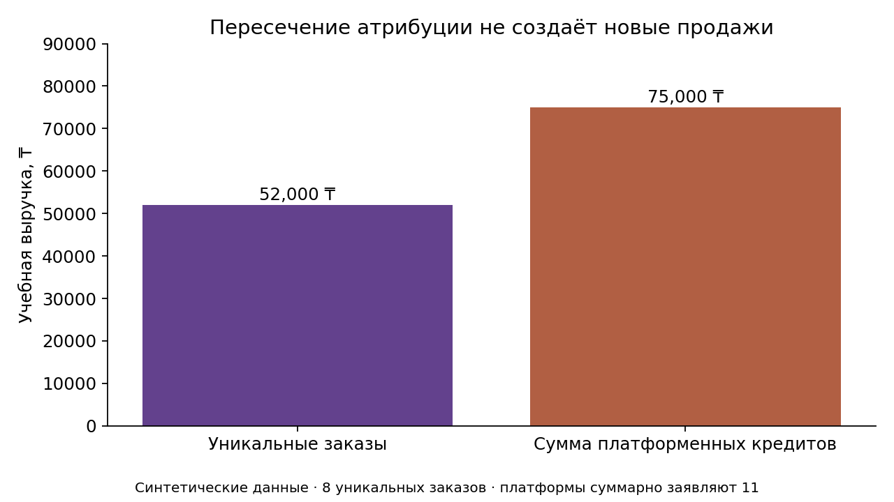
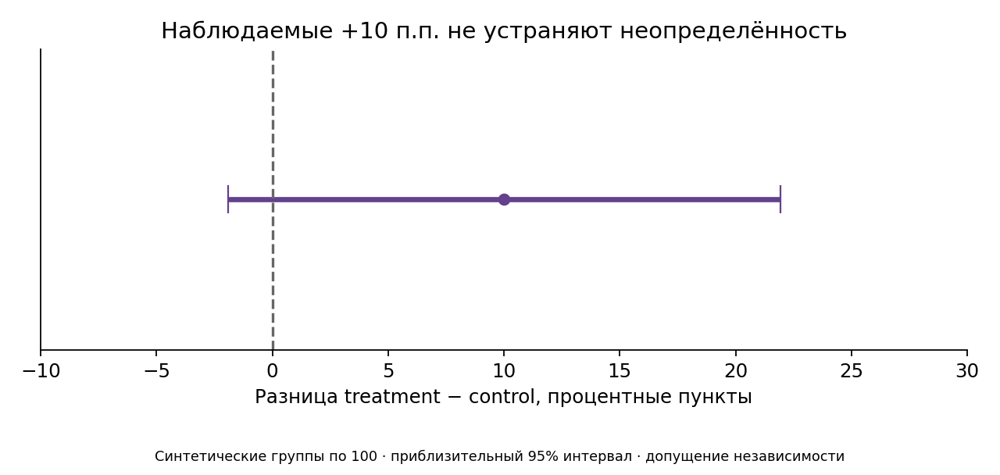

Маркетинг без выдуманной эффективности
Вымышленный бренд и синтетические данные. Атрибуция описывает распределение учёта; она не доказывает причинный эффект рекламы.
Общий обзор
Два графика относятся к полному учебному набору и не меняются от фильтра.


Сценарий бюджета
Постоянные коэффициенты воронки — допущения. Прогноз не является обещанием продаж.
Календарь на 4 недели
Все записи — план, публикация не выполнялась.